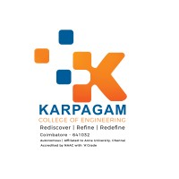
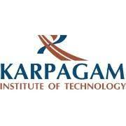

The Karpagam College of Engineering, established in the Year 2000,
is an Autonomous institution, Approved by AICTE, New Delhi and Affiliated to Anna University, Chennai. The college offers
various Under Graduate and Post Graduate Engineering programmes.The College is accredited by NAAC with ‘A+’ Grade, TCS and Wipro
with 4500 students and 426 teaching and non-teaching staff members, Karpagam College of Engineering strives to impart quality
education and an excellent career start to all its students.
The College is situated at Myleripalayam, 15 kms from
Coimbatore Central Railway station. The serene location surrounded by green fields and rich clusters of coconut groves creates
a calm atmosphere conducive to learning and growth. Infrastructure with
well-equiped laboratories and libraries, well maintained Playgrounds, Hostels, Food Court, Gymnasium and an Indoor Stadium.
Karpagam Academy of Higher Education is conferred with Deemed to be University
status under Section 3 of UGC Act, 1956 in 2008.
Member of Association of Indian Universities.
Accredited with A+ Grade by NAAC in the Second cycle.
NIRF Ranking 2023, in the rank band 151-200 by the Ministry of Education, Government of India.
NIRF for Innovation Ranking, in the rank band of 51-100 by the Ministry of Education, Government of India.
ISO 9001 -2015 Certified (Quality Management System).
ISO 14001- 2015 Certified (Environment Management System).
Arts / Science programmes approved by UGC.
Architecture programmes approved by Council of Architecture.
Drug Testing Laboratory approved by the Drug Controller of Tamil
Nadu.
DST-FIST status to Department of Biotechnology.
NSS approved by Ministry of Youth Affairs, Government of India.
NCC approved by Ministry of Defence, Government of India

Karpagam Institute of Technology was established in the year 2007, by Dr.R. Vasantha Kumar and is accredited by AICTE, NAAC and NBA and takes its affiliation from the state technical university of Tamil Nadu, Anna University (AU). It offers B.E and B.Tech courses.
Admissions are done on the guidelines of the Tamil Nadu Engineering Admissions (TNEA).
The students can select the field and branch of engineering while they’re enrolling themselves.
Keeping up to its legacy, every year the institute invites top companies like Cognizant, HP and Amazon for
student placement. It also hosts various programs and seminars to boost the confidence of students. It also organised
various programs initiated by the placement cell of the institute.
There are 926 placement offers from 365 companies and home to world-class facilities.
| S.no |
Bus.no |
Starting Point |
Route |
| 1. |
1 |
Veerapandi Pirivu |
PN Palayam, LMW, Gas Company, NSN Palayam |
| 2. |
1B |
Thoppampatti Pirivu |
NGGO Colony Pirivu, Vadamadurai, Thudialur, GN Mills, Goundampalayam, North CBE, Flower Market, Marakkadai, 5 Corner |
| 3. |
2 |
Kalveerampalayam |
Vadavalli, Mullai Nagar, PN Pudur, Lawley road, Milk Company |
| 4. |
3 |
Ondipudur |
Singanallur, ESI, Sowripalayam Pirivu, Ramanathapuram, Sungam |
| 5. |
4 |
Edayarpalayam |
Kovilmedu, Velandipalayam, Vengittapuram, Saibaba Colony, Gandhipark, Telugu Street, Raja Street |
| 6. |
5A |
Pollachi |
Kovilpalayam, Kinathukadavu |
| 7. |
6 |
Saravanampatti |
SRP Mills, Bharathi Nagar, Ganapathy, Lakshmipuram |
| 8. |
6A |
Sivanandha Colony |
100 feet road, Gandhipuram, Women’s Polytechnic, Anna Statue
|
| 9. |
10A |
Thennampalayam Pirivu |
Palladam, Karanampettai, Sulur, Paapampatti Pirivu, Paapampatti, Chettipalayam |
| 10. |
12 |
Aalandurai |
Madhampatti, Perur, Sundakkamuthur, Kovaipudur, Kunimuthur, Aathupaalam |